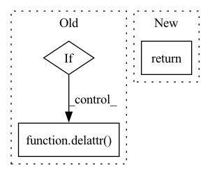

Pattern ID :4495
Before Change
def state_dict(self, *args, **kwargs):
// make sure VGG is not saved in state dictionary
has_vgg = hasattr(self, "vgg")
if has_vgg:
vgg = self.vgg
delattr( self, "vgg")
state_dict = super().state_dict(*args, **kwargs)
if has_vgg:After Change
@remove_vgg
def state_dict(self, *args, **kwargs):
return super().state_dict(*args, **kwargs)
@remove_vgg
def load_state_dict(self, *args, **kwargs):In pattern: SUPERPATTERN
Frequency: 3
Non-data size: 3
Instances Fragment ID: 16363489
Project Name: lucidrains/nuwa-pytorch
Commit Name: 0e0c25cbf223ae286a49e54447e6897b23bb9bee
Time: 2022-03-11
Author: lucidrains@gmail.com
File Name: nuwa_pytorch/vqgan_vae.py
M Class Name: VQGanVAE
N Class Name: VQGanVAE
M Method Name: state_dict(1)
N Method Name: state_dict(1)
M Parent Class: nn.Module
N Parent Class: nn.Module
M File Name: nuwa_pytorch/vqgan_vae.py
N File Name: nuwa_pytorch/vqgan_vae.py
M Start Line: 399
M End Line: 408
N Start Line: 417
N End Line: 417
Before Change
return setattr(_get_attr(obj, [names[0]]), names[1], val)
def _del_attr(obj, names):
if len(names) == 1:
return delattr( obj, names[0])
else:
return delattr(_get_attr(obj, [names[0]]), names[1])
def _has_attr(obj, names):After Change
def _del_attr(obj, names):
attrfcn = lambda obj, name: delattr(obj, name)
itemfcn = lambda obj, key: obj.__delitem__(key)
return _traverse_attr(obj, names, attrfcn, itemfcn)
def _preproc_name(name): Fragment ID: 16363488
Project Name: xitorch/xitorch
Commit Name: 878ae37645cea9ac1d4236f2d8ded9463ecc84e5
Time: 2020-08-11
Author: firman.kasim@gmail.com
File Name: lintorch/utils/attr.py
M Class Name: AnonimousClass
N Class Name: AnonimousClass
M Method Name: _del_attr(2)
N Method Name: _del_attr(2)
M Parent Class:
N Parent Class:
M File Name: lintorch/utils/attr.py
N File Name: lintorch/utils/attr.py
M Start Line: 29
M End Line: 33
N Start Line: 30
N End Line: 32
Before Change
def load_state_dict(self, *args, **kwargs):
has_vgg = hasattr(self, "vgg")
if has_vgg:
vgg = self.vgg
delattr( self, "vgg")
super().load_state_dict(*args, **kwargs)
if has_vgg:After Change
@remove_vgg
def load_state_dict(self, *args, **kwargs):
return super().load_state_dict(*args, **kwargs)
@property
def codebook(self): Fragment ID: 16363490
Project Name: lucidrains/nuwa-pytorch
Commit Name: 0e0c25cbf223ae286a49e54447e6897b23bb9bee
Time: 2022-03-11
Author: lucidrains@gmail.com
File Name: nuwa_pytorch/vqgan_vae.py
M Class Name: VQGanVAE
N Class Name: VQGanVAE
M Method Name: load_state_dict(1)
N Method Name: load_state_dict(1)
M Parent Class: nn.Module
N Parent Class: nn.Module
M File Name: nuwa_pytorch/vqgan_vae.py
N File Name: nuwa_pytorch/vqgan_vae.py
M Start Line: 411
M End Line: 421
N Start Line: 421
N End Line: 421